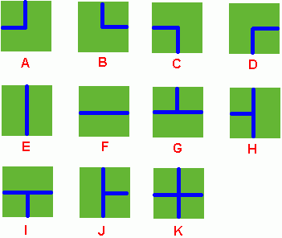
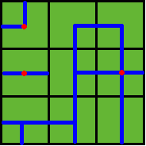

HDU-1198 Farm Irrigation
题目：
Farm Irrigation
Time Limit: 2000/1000 MS (Java/Others) Memory Limit: 65536/32768 K (Java/Others)
Total Submission(s): 8823 Accepted Submission(s): 3817
Problem Description
Benny has a spacious farm land to irrigate. The farm land is a rectangle, and is divided into a lot of samll squares. Water pipes are placed in these squares. Different square has a different type of pipe. There are 11 types of pipes, which is marked from A to K, as Figure 1 shows.
 Figure 1
Benny has a map of his farm, which is an array of marks denoting the distribution of water pipes over the whole farm. For example, if he has a map
ADC
FJK
IHE
then the water pipes are distributed like
 Figure 2
Several wellsprings are found in the center of some squares, so water can flow along the pipes from one square to another. If water flow crosses one square, the whole farm land in this square is irrigated and will have a good harvest in autumn.
Now Benny wants to know at least how many wellsprings should be found to have the whole farm land irrigated. Can you help him?
Note: In the above example, at least 3 wellsprings are needed, as those red points in Figure 2 show.
Input
There are several test cases! In each test case, the first line contains 2 integers M and N, then M lines follow. In each of these lines, there are N characters, in the range of ‘A’ to ‘K’, denoting the type of water pipe over the corresponding square. A negative M or N denotes the end of input, else you can assume 1 <= M, N <= 50.
Output
For each test case, output in one line the least number of wellsprings needed.
Sample Input
2 2
DK
HF
3 3
ADC
FJK
IHE
-1 -1
Sample Output
2
3
代码：
1 |
|
解析&吐槽：
跟正常的深搜差不多，就是增加了一个 bool 数组来表示哪里是联通的。每次递归的时候都在 4 个 方向里面选择联通的方向进行递归，递归的第三个参数表示之前的管道通过哪个方向到达这个管道， 在递归的开头判断如果这个地面有一个管道和之前的地面相连，就表示水可以从上一个地面流到这里， 就对此地面进行标记并继续递归，否则终止这条线路。
在主函数里面扫描每一个没有标记的位置并进行递归，然后自增计数器，最后计数器的值就是结果。